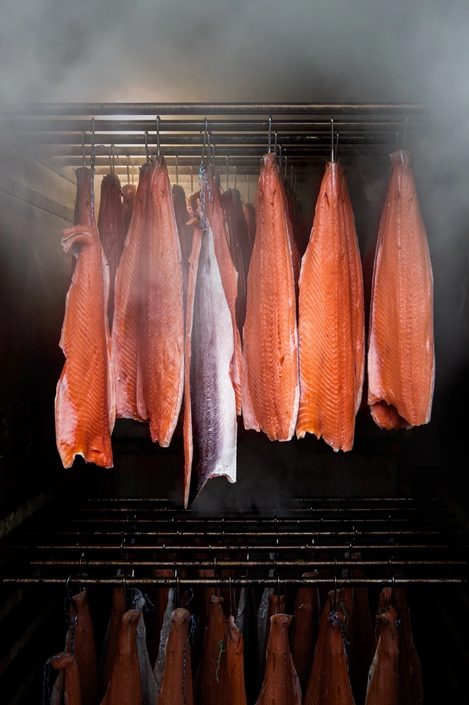
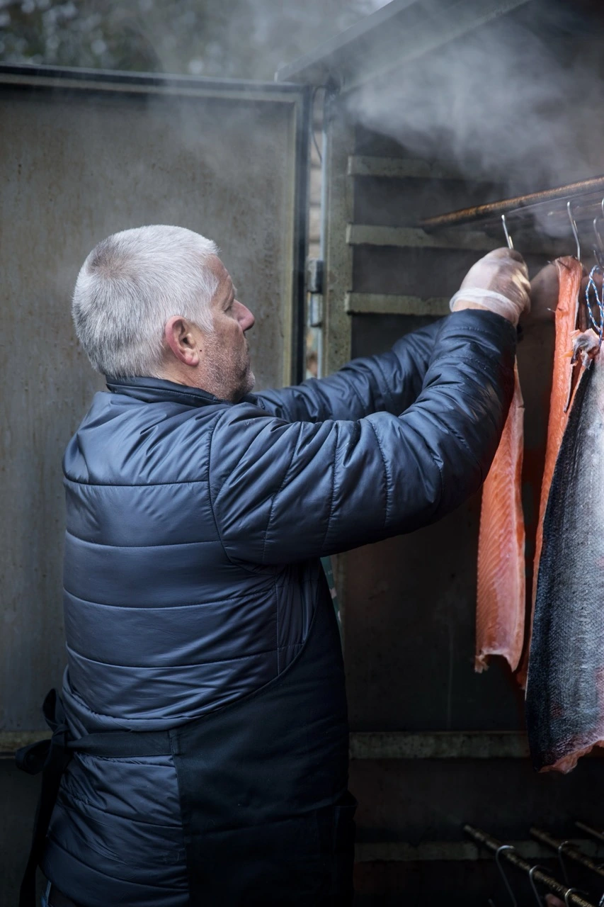
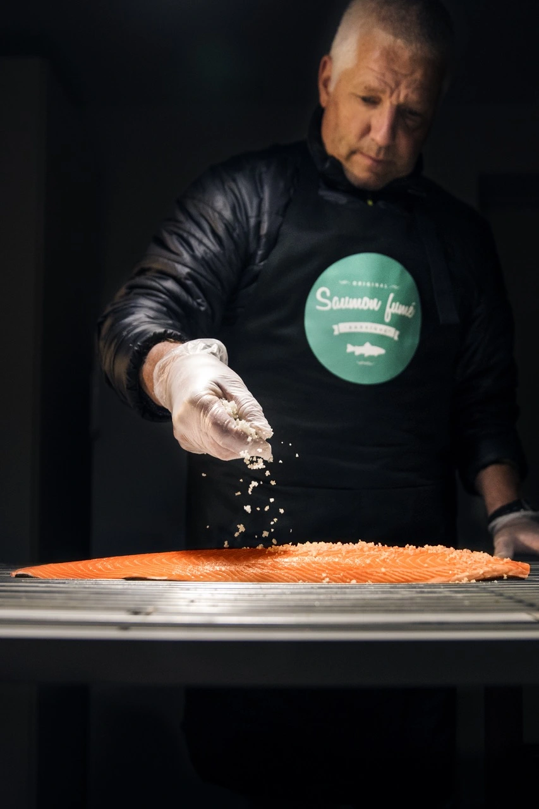
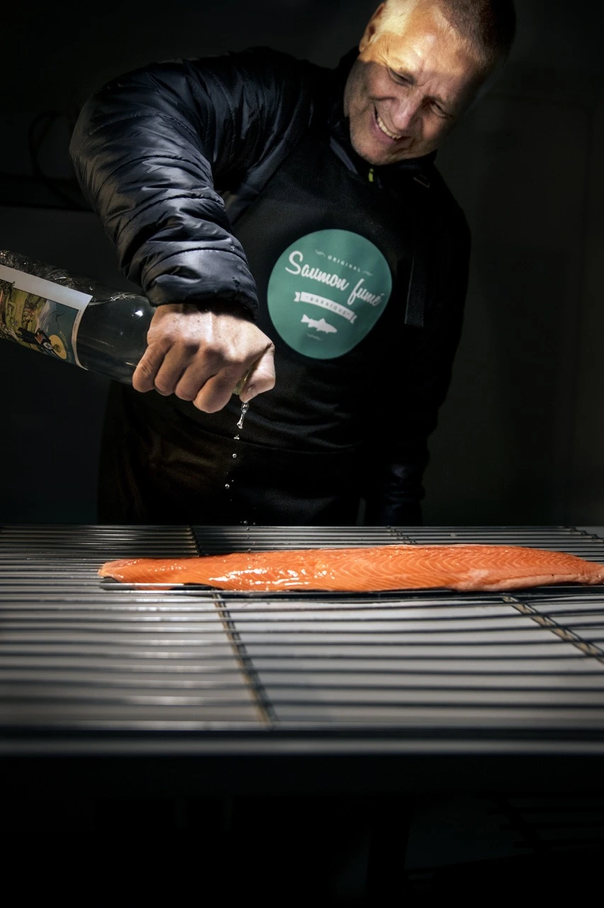
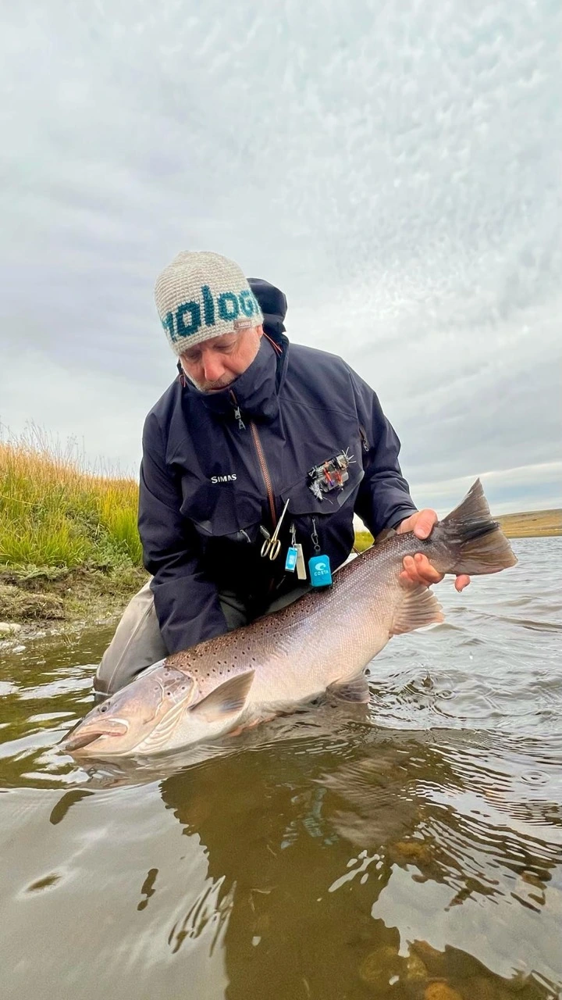
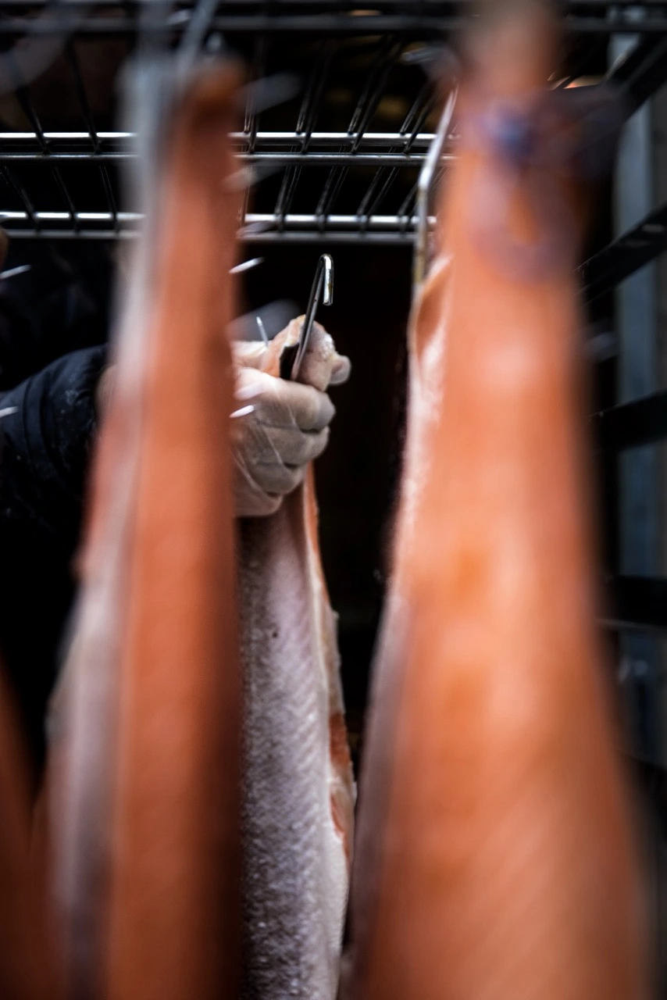
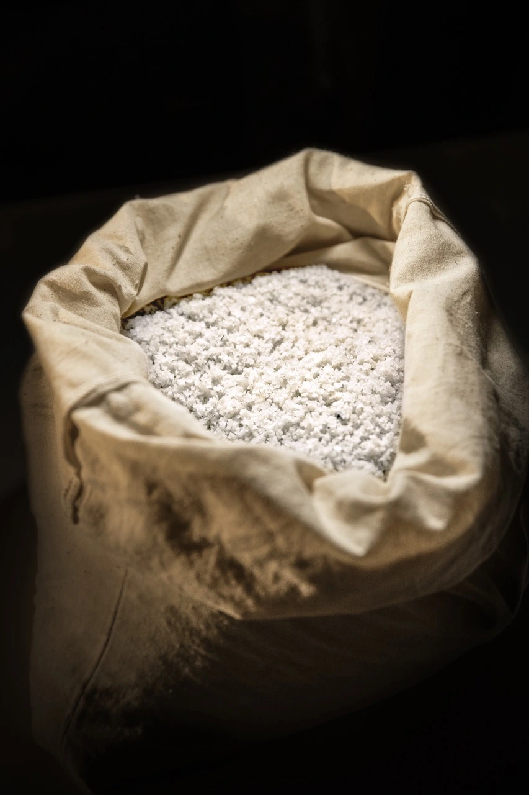
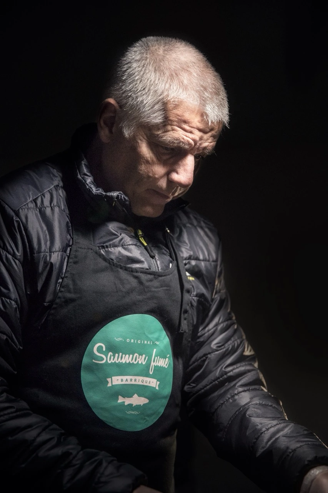

{{ p.eyebrow }}
{{ p.nom }}
{{ p.long }}
{{ p.degustation }}
{{ p.prix }}
Plaquettes découpées à la main — poids approximatif, prix au poids réel.
- {{ s.k }}
- {{ s.v }}
La maison
Les filets d'atlantique sont parés à la main, salés au sel sec, puis fumés à froid dans notre atelier de Fleurier. Petites quantités, gestes constants.
Notre savoir-faire
Nos produits



Le fumage
Aucune source de chaleur dans la chambre : seule la fumée froide travaille la chair, entre 0 et 20 degrés. Le combustible fait toute la différence — des copeaux de barriques de chêne Jack Daniel's, pour une fumée ronde et légèrement vanillée.
0–20°
Température
de fumage
6
Étapes
artisanales
4
Saumons dont
un à l'absinthe

Notre histoire
Enfant à Fleurier, on pêche dans la rivière du village. Adulte, on part pour les fleuves du Nord. Restait à réunir les deux passions : la pêche et la table.
Toute l'histoireRecettes et événements
Quatre recettes simples, et les marchés où nous tenons un stand.
Self-service 7j/7
Frigo en libre-service accessible tous les jours, sans rendez-vous. Paiement sur place.
Nos produits
Tous nés du même geste : parage à la main, salage au sel sec, fumage à froid. En plaquettes tranchées sous vide ou en filet entier, selon les saisons. Pas de boutique en ligne — la réservation se fait par e-mail ou par téléphone.
{{ p.eyebrow }}
{{ p.long }}
{{ p.degustation }}
Le fumage à froid n'accepte aucun raccourci. Pas de chaleur, pas d'accélérateur, pas de fumée liquide. Seulement du sel, du bois, du temps — et un artisan qui décide chaque matin si le vent est bon.
{{ s.num }}
{{ s.texte }}
{{ s.duree }}
Notre histoire

Fleurier, Val-de-Travers
Une maison individuelle, un fumoir, et la rivière à quelques pas.
{{ b.texte }}
La philosophie
Nous ne cherchons pas le volume. Chaque fournée est préparée à la main, dans un atelier homologué par le Service cantonal de la consommation et des affaires vétérinaires, et repose le temps qu'il faut.
Nos produits partent chez quelques restaurateurs et commerces de la région, sur les marchés, et lors de manifestations publiques ou privées.


Recettes
Quatre façons de servir le saumon fumé, de l'apéritif improvisé au plat de fête. Rien de compliqué : le produit fait le travail.
Recette
{{ recette.intro }}
{{ e.t }}
{{ recette.cta }}
Commander votre saumonNos événements
Le fumoir sort de son atelier plusieurs fois par an. C'est la meilleure occasion de goûter les quatre saumons côte à côte — et de repartir avec.
Quelques commerces et restaurants de la région nous font confiance.
{{ pv.lieu }}
{{ pv.type }}
Vous n'avez pas besoin de nous appeler, ni d'attendre un jour de marché. Le frigo en libre-service est installé devant l'atelier, au chemin des Acacias 10 : il est rempli chaque matin avec les plaquettes du moment, et il reste accessible toute la journée, tous les jours de l'année.
{{ st.texte }}
La disponibilité dépend des fournées. Pour un filet entier ou une grande quantité, passez plutôt par la commande — nous le préparons pour vous.
Venir au self-service
Chemin des Acacias 10
2114 Fleurier, Suisse
À cinq minutes à pied de la gare de Fleurier. Stationnement possible devant la maison.
Ouvrir l'itinéraire Commander à l'avance{{ evenement.intro }}
Bon à savoir
{{ evenement.note }}
Commande
Composez votre commande ci-dessous : nous préparons un e-mail prêt à envoyer, avec le récapitulatif. Aucun paiement en ligne, et aucune expédition — le retrait se fait en main propre à Fleurier ou à Bôle, où vous réglez sur place.
1 — Vos saumons
Tous nos saumons sont vendus au poids, au prix indiqué sur chaque produit. Les plaquettes sont découpées à la main : le poids annoncé est approximatif (une plaquette de 200 g pèse en général entre 180 et 220 g). Le prix final est calculé au poids réel, à la pesée.
2 — Le retrait
Pas de livraison — retrait sur place
Nos produits ne sont pas expédiés : la chaîne du froid ne peut pas être garantie par la poste. Votre commande se retire en main propre, à Fleurier ou à Bôle.
3 — Vos coordonnées
Contact
Atelier
Saumon Fumé des Acacias
Chemin des Acacias 10
2114 Fleurier, Suisse
Téléphone
079 504 59 80Visites et retraits
Sur rendez-vous téléphonique. Pensez à appeler quelques jours à l'avance pour les grandes quantités et les fêtes.
Écrivez-nous en deux lignes : nous répondons rapidement. Pour une commande, passez plutôt par la page réservation.